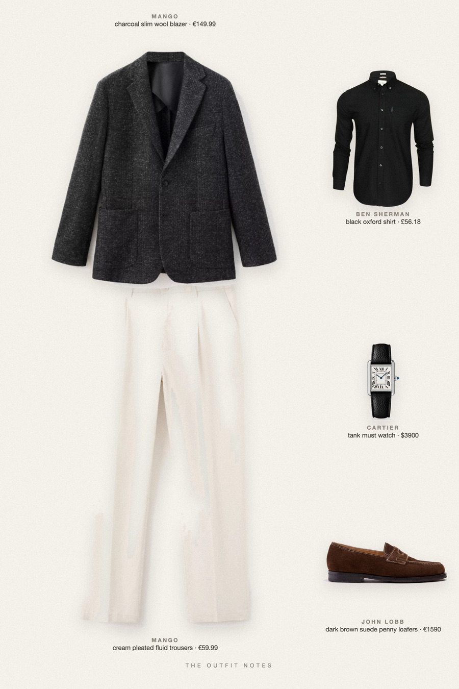
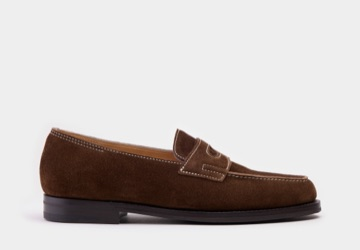

Midnight Charcoal
new year's eve, open collar

New Year's Eve outfit men can wear all night: a Mango charcoal wool-blend blazer over a Ben Sherman black Oxford shirt worn open, light beige pleated trousers and dark brown suede John Lobb Lopez loafers. A Cartier Tank Must adds a quiet luxury note. Holiday party outfit men, classy and sharp.
The pieces
This page contains affiliate links: if you buy through them, we may earn a commission at no extra cost to you. Disclosure.
 Mango
Mango
Charcoal slim wool blazer
Shop Ben Sherman
Ben Sherman
Black oxford shirt
Shop Mango
Mango
Cream pleated fluid trousers
Shop
John Lobb
Dark brown suede penny loafers
Shop Cartier
Cartier
Tank must watch
Shop
Prices are indicative, taken when the look was published, and may have changed. Pictures of the outfit are AI-generated illustrations of real products; the product photos are the retailers' own.
Published 2 October 2026.